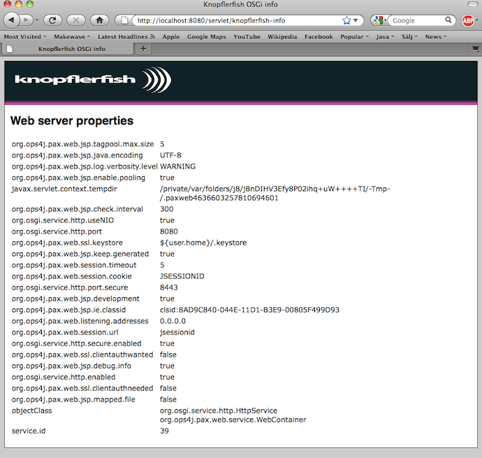
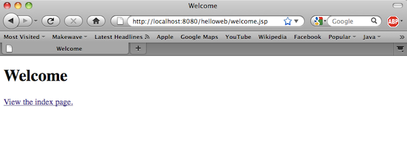

Using Pax Web in Knopflerfish for JSPs and WAR-files
Short tutorial on how to use Pax Web in Knopflerfish for WARs and JSPs.Replacing the KF HTTP server with Pax Web / Jetty
The default HTTP server in KF is Knopflerfish's own small foot-print HTTP server intended for embedded use. The KF HTTP server does not support WARs nor JSP. To run WARs in KF you therefore need to replace the KF HTTP server with something more appropriate for enterprise use, e.g. Pax Web.
As an embedded vs. enterprise comparison the KF HTTP server is 95K in size. Jetty, which PaxWeb is based on, is 2.3M and the JSP support is 2.8M.
Uninstall the KF HTTP bundles
The first step is to stop the HTTP root bundle and uninstall the JSDK and HTTP-server bundles as PaxWeb will take over this function. Normally you will most likely also want to uninstall the HTTP-root-bundle, but for this tutorial we will leave it installed. Make sure to do a refresh packages before going to the next step. Command/Ctrl R in the desktop.Install PaxWeb
The second step is install and start the following bundles from PaxWeb.- pax-web-jsp-1.0.2.jar (install)
- pax-web-jetty-bundle-1.0.2.jar (install & start)
- pax-web-extender-war-0.8.0.jar(install & start)
- http://repo1.maven.org/maven2/org/ops4j/pax/web/pax-web-jsp/1.0.2/pax-web-jsp-1.0.2.jar
- http://repo1.maven.org/maven2/org/ops4j/pax/web/pax-web-jetty-bundle/1.0.2/pax-web-jetty-bundle-1.0.2.jar
- http://repo1.maven.org/maven2/org/ops4j/pax/web/pax-web-extender-war/0.8.0/pax-web-extender-war-0.8.0.jar
If you now start the HTTP root bundle again it will be using Jetty instead of the KF HTTP server. This can be verified by surfing into:
http://localhost:8080/servlet/knopflerfish-infoThis will list the web server properties and should look something like this:

This means you are now running Jetty successfully in Knopflerfish.
Preparing a WAR for OSGi
To prepare the WAR for OSGi an OSGi manifest must be created. Below is an example of such a manifest taken from a simple HelloWeb.war example.Manifest-Version: 1.0 Bundle-ManifestVersion: 2 Bundle-Name: Hello Web Bundle-SymbolicName: org.knopflerfish.demo.hello_web Bundle-Version: 1.0 Bundle-ClassPath: .,WEB-INF/classes Bundle-Vendor: Knopflerfish Project Bundle-ContactAddress: http://www.knopflerfish.org Bundle-Description: Simple demo WAR with a JSP and an HTML page Webapp-Context: helloweb
Deploy the WAR into Knopflerfish
The final step is to deploy the WAR into Knopflerfish. Pax Web will take the bundle and deploy it into Jetty. You deploy the WAR just like any other bundle. Using the desktop you can install directly from this URL: http://www.knopflerfish.org/tutorials/kf_pax_web/HelloWeb.warAfter successfully installing HelloWeb the WARs web content is available under the Webapp-Context path defined in the manifest as described above, i.e.:
http://localhost:8080/helloweb/
Opening this URL in a browser should result in the following page:

Exactly the same webapp that might be deployed in Tomcat (or other web containers) can be used without change in OSGi. The only work needed is addition of an OSGi bundle manifest as described above.